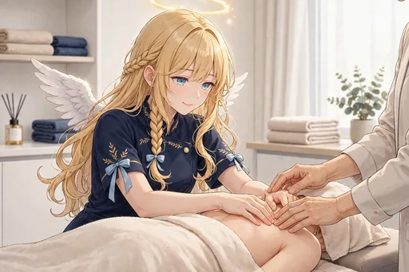

セラフィナ 第4弾『癒しの天使のお仕事編』イラストパック

ストーリー紹介
セラフィナの「癒しのお仕事」の場面を集めた30枚です。疲れた会社員の肩にそっと手を置き、夜勤明けの看護師にお茶を渡し、眠る母親のそばで静かに見守る。アロマやハーブティー、足湯の修行も積みながら、街の人々の「おつかれさま」に寄り添い、最後は天界の上司へ「みなさん、がんばっています」と報告するまでの物語です。
派手な奇跡ではなく、そっと寄り添う小さな癒しの積み重ねがテーマです。アロマやハーブティー、足湯といった「癒しの技術」を修行する場面も交えながら、街の人々の「おつかれさま」に寄り添う日々を描きます。染まっていく日常の中でも、天使としての本分がどう息づいているかを見せる30枚です。
ダウンロード販売（ZIP 3分割）／全年齢／BOOTH「angel222」で販売中
商品情報
| タイトル | セラフィナ 第4弾『癒しの天使のお仕事編』イラストパック｜見習い天使の現代日本コメディ |
|---|---|
| 収録内容 | イラスト30点（ダウンロード販売） |
| 価格 | 500円 |
| 販売 | BOOTH「angel222」 https://angel222.booth.pm/items/9076180 |
| 備考 | 全年齢。登場するキャラクターは架空の存在です。イラストにはAI生成を含みます |
場面紹介（全30枚）

- 1. 疲れた会社員の肩にそっと手を置く — 疲れた会社員の肩に、淡い光とともにそっと手を置く場面。
- 2. 夜勤明けの看護師へ温かいお茶を渡す — 夜勤明けの看護師へ温かいお茶を渡す場面。
- 3. 眠る母親のそばで静かに見守る — 眠る母親のそばで静かに見守る場面。
- 4. 勉強中の学生の机に温かい飲み物 — 勉強中の学生の机に温かい飲み物をそっと置く場面。
- 5. 職人さんの休憩にふっと現れる — 職人さんの休憩時間にふっと現れる場面。
- 6. 雨の日の配達員へタオルを差し出す — 雨の日に濡れた配達員へタオルを差し出す場面。
- 7. サロンで施術の修行 — サロンで施術の修行をする場面。
- 8. 常連客の話に耳を傾ける — 常連客の話にじっくり耳を傾ける場面。
- 9. アロマオイルを選ぶ真剣な顔 — アロマオイルを選ぶ真剣な顔。
- 10. ハーブティーを淹れる — ハーブティーを丁寧に淹れる場面。
- 11. 足湯の準備をする — 足湯の準備をする場面。
- 12. お客さんを笑顔で見送る — お客さんを笑顔で見送る場面。
- 13. 寝落ちした人の毛布をそっと直す — 寝落ちした人の毛布をそっと直す場面。
- 14. 喫茶店で悩み相談に寄り添う — 喫茶店で悩み相談に寄り添う場面。
- 15. 朝の市場で元気に挨拶 — 朝の市場で元気に挨拶を交わす場面。
- 16. 農作業の休憩に麦茶を運ぶ — 農作業の休憩に麦茶を運ぶ場面。
- 17. 長距離ドライバーの休憩所でねぎらう — 長距離ドライバーの休憩所でねぎらう場面。
- 18. 雨宿りの猫と一緒に雨を眺める — 雨宿りの猫と一緒に雨を眺める場面。
- 19. 猫カフェで猫に囲まれる — 猫カフェで猫たちに囲まれる場面。
- 20. 老夫婦の散歩にそっと同行 — 老夫婦の散歩にそっと同行する場面。
- 21. 駅で迷う人の道案内 — 駅で迷っている人の道案内をする場面。
- 22. クリスマスに働く人へケーキを届ける — クリスマスに働く人へケーキを届ける場面。
- 23. 年末の掃除を手伝う — 年末の掃除を手伝う場面。
- 24. 「がんばらなくていい日もある」 — 「がんばらなくていい日もある」と伝える、壁紙向けの穏やかな一枚。
- 25. 満月の夜に祈る — 満月の夜に祈る場面。
- 26. 朝日のなかで深呼吸 — 朝日のなかで深呼吸をする場面。
- 27. おつかれさまの手紙を書く — おつかれさまの手紙を書く場面。
- 28. 温泉で湯上がりの人々の笑顔を見守る — 温泉で湯上がりの人々の笑顔を見守る場面。
- 29. 空から街の灯りを見守る — 空から街の灯りを見守る場面。
- 30. 天界の上司への報告 — 天界の上司への報告の場面。
ほかのイラストパック
物語の次は、第5弾『すっかり日本の生活者編』です。